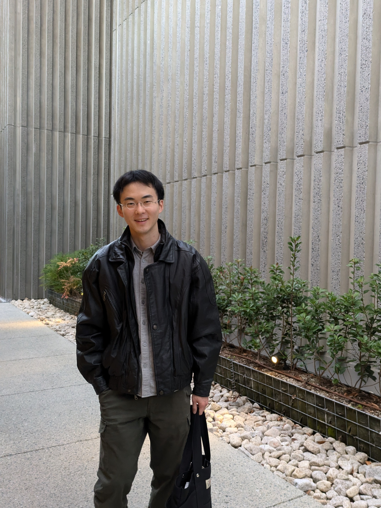
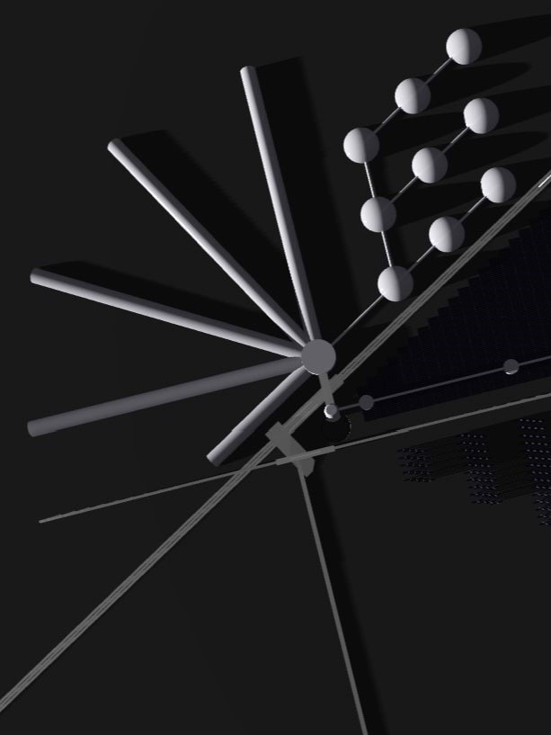
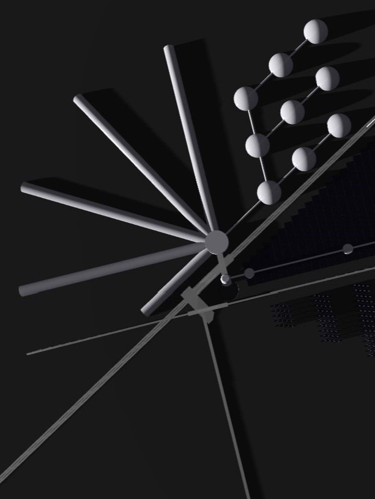

林浩平 | Kohei Hayashi
建築学科を卒業。2025年春に人間・環境学修士と、文具メーカーに就職。(予定)
趣味でものづくりをしています。ときどき真面目に「マルバヤシ | mrbysh」名義で活動。代表作は〈PARERGO®〉。
行為が形になる時や、イメージと現実のズレに関心があります。
今年の抱負は「チームワーク」、裏抱負は「脱ペーパードライバー」「きれい目の服を着る」「釣りを始める」
このサイトの３つの機能
①Works
これまでの取り組みを写真と文章で整理しています。大学以降の取り組みをすべて収録することが目的のため、有象無象です。
（近日中に分類を追加する予定です。material、web、houseは実際に製作したもの、conceptualはアイデア構想どまりのもの、playは遊べるページとなります。）
②Play !!
 

コーディングで遊ぶ場所です。3Dモデルを動かしてみたり、アーカイブの内容を情報処理したり、自分用の簡単なwebアプリを作ってみたり、など。
②Scenes
写真をまとめます。（準備中）
リンク
instagramでときどき投稿
アートコレクティブVutterKohenのメンバーとして空間デザイン等に参加。
京都大学 建築学科 小見山研究室 OBです。当時の取り組みがいくつか収録されています。